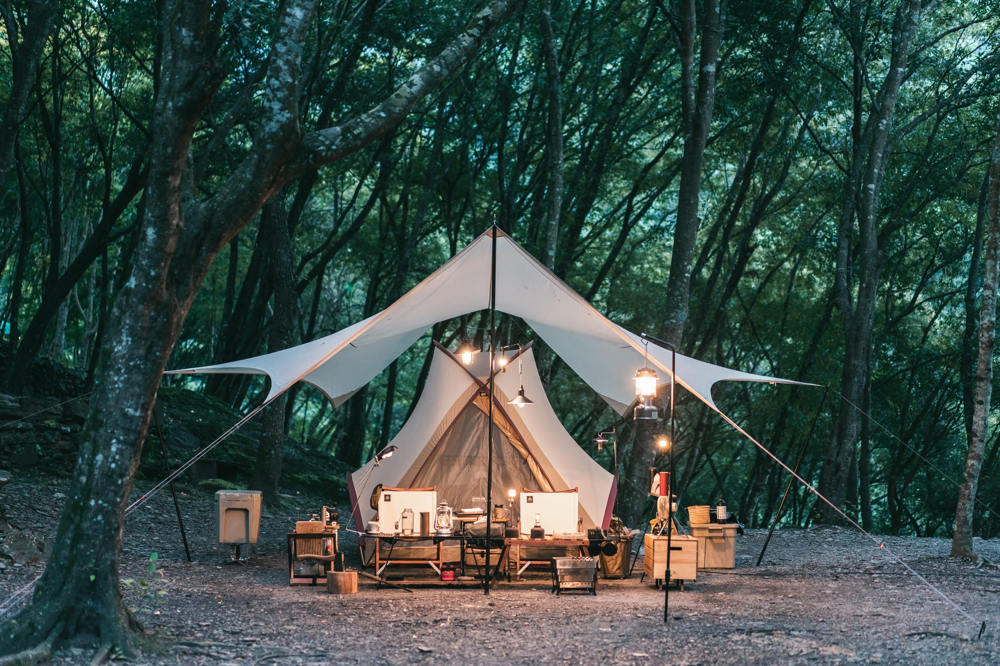
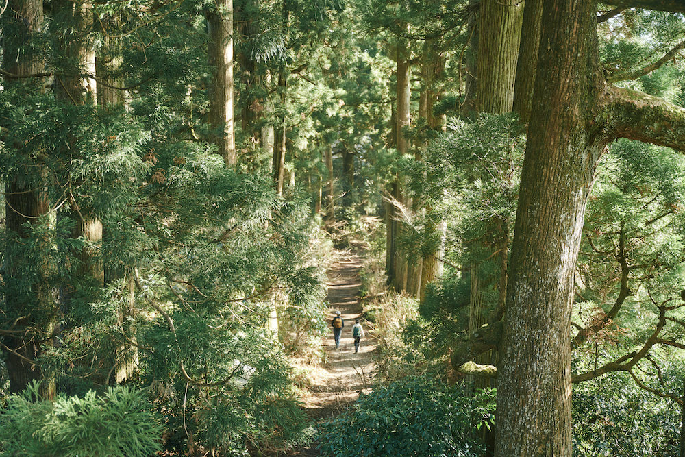
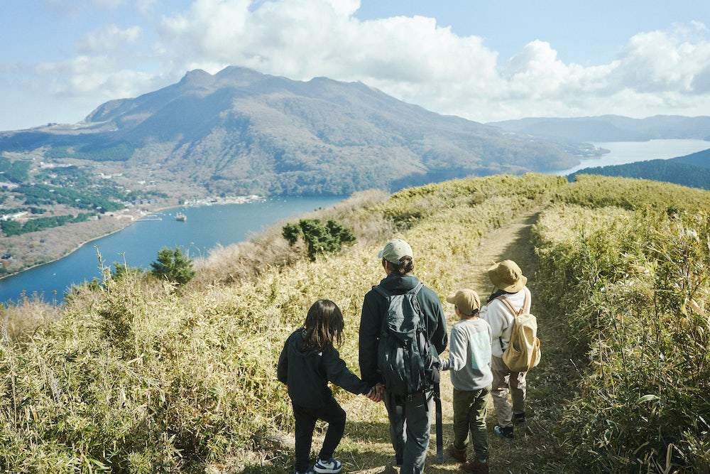
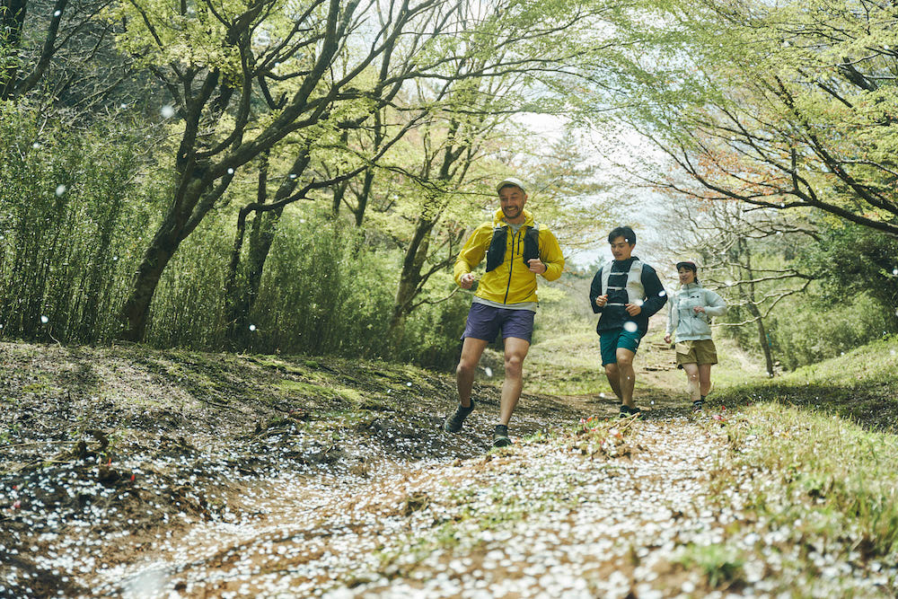
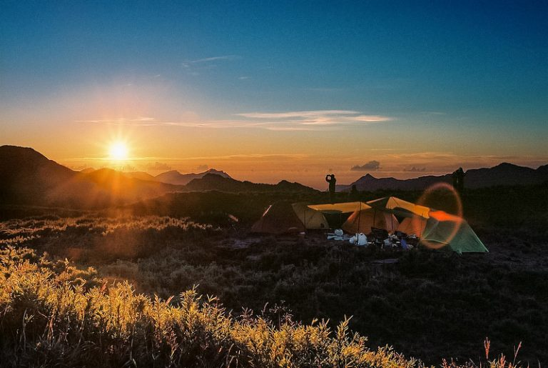
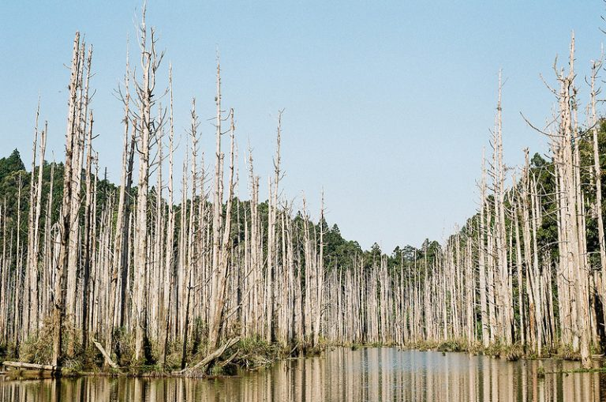
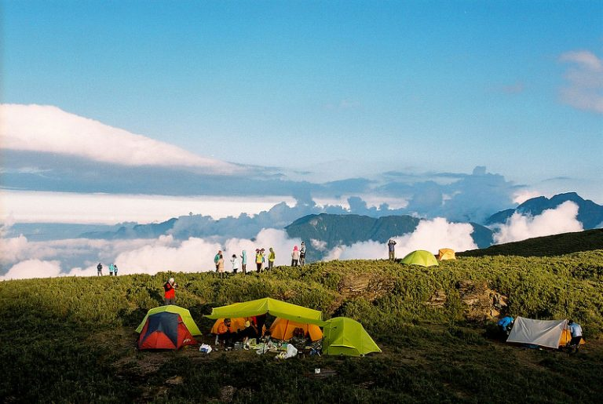

To Travel is To Life
露營的意義超越了單純的旅行，它是一種回歸自然、放鬆身心的體驗。
它讓我們重新獲得內心的寧靜，思考生活的意義，與親友分享溫暖與快樂。
在露營中，我們能夠遠離城市的喧囂，沉浸在清新的空氣中，聆聽蟲鳴鳥叫，觀賞星空繁星。

FOREST
在森林裡，人們可以感受到大自然的美麗和神奇。漫步於茂密的樹林間，聆聽鳥鳴蟲鳴，呼吸清新的空氣，彷彿與自然融為一體。探索森林，發現其中的生態奧秘，享受純粹的寧靜與放鬆。

MOUNTAIN
登山的樂趣源自於挑戰自我，以及在自然中找到平靜與連結。登山者透過攀爬，感受身心的釋放與成長，同時欣賞壯麗風景，享受登頂的成就感。

ROAD
穿越曲折蜿蜒的林道，感受身體的極限與力量。在大自然的懷抱中奔跑，呼吸新鮮空氣，感受風的拂過。每一步都是對自我的挑戰，每一個轉彎都是未知的探險，讓人心驚膽跳，卻又充滿無盡的樂趣與成就感。
PROJECT

合歡小溪營地
環境清幽，溪水潺潺，適合親子露營。

水漾森林
密林環繞，清新空氣，適合生態探險。

松蘿湖
湖光山色，星空璀璨，適合賞湖露營。